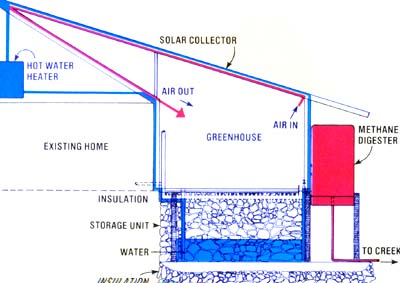

This schematic shows how add-on greenhouse/spare room was attached to Dycus cottage and illustrates the relationship of the addition's roof to the room itself, the solar heat storage reservoir underneath, and the methane-producing digester installed along the sun room's south wall. Water circulation up through the roof (where it's heated) to the cabin's water heater to the solar reservoir under the sun room to the waste digester and then either back through the roof or off to the creek from whence it originally came is shown in blue. Red indicates the circulation of air from the green house/spare room up through the roof (where itlike the circulating wateris heated) and back down to the greenhouse/spare room The system's operation is actually far less complicated than even this simple drawing makes it seem